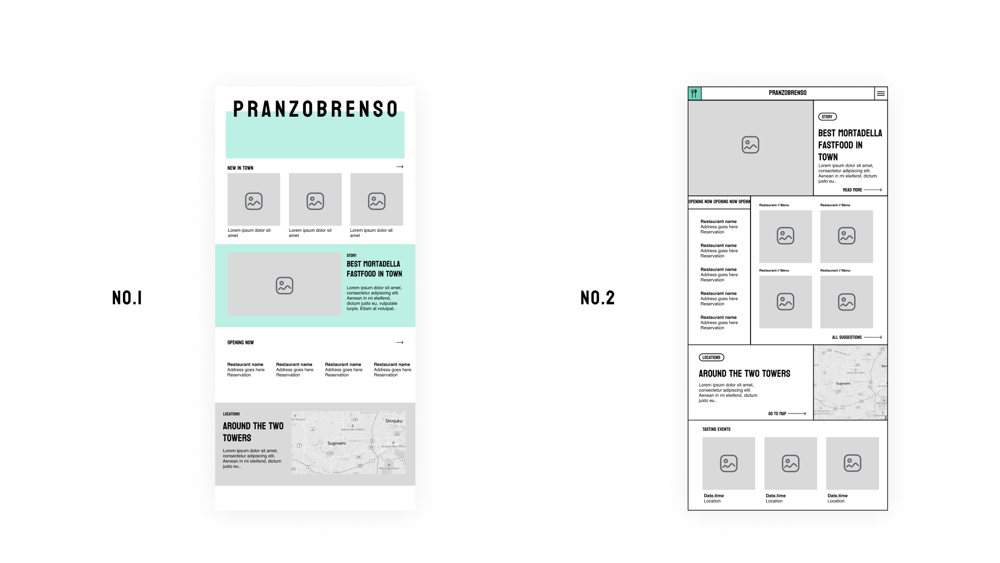
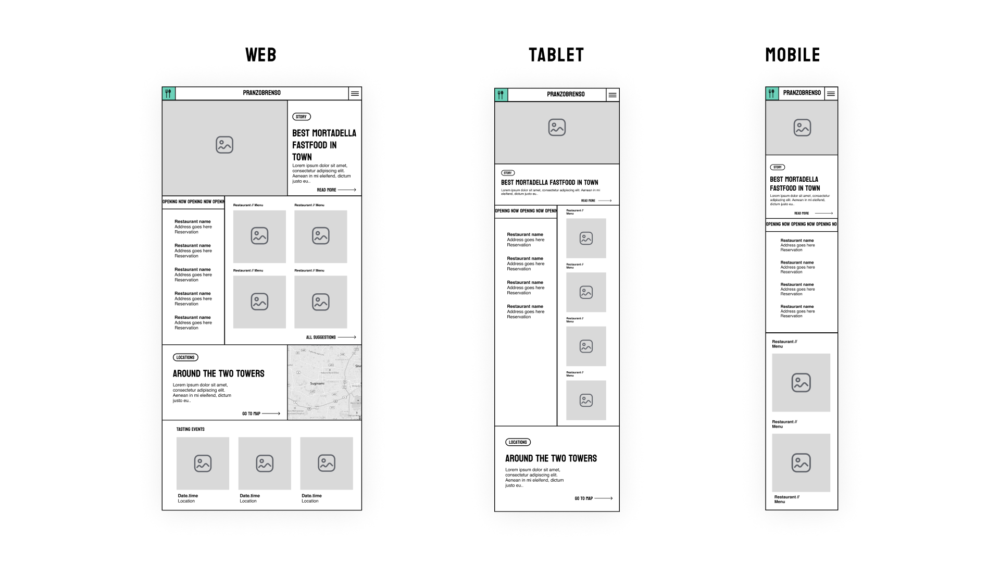
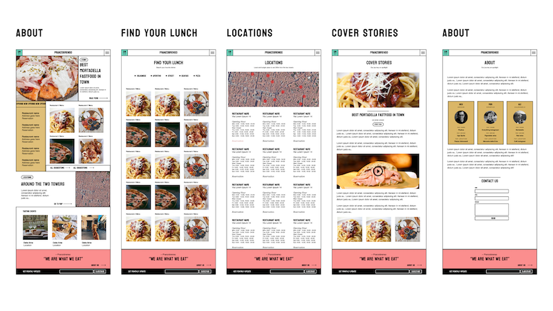
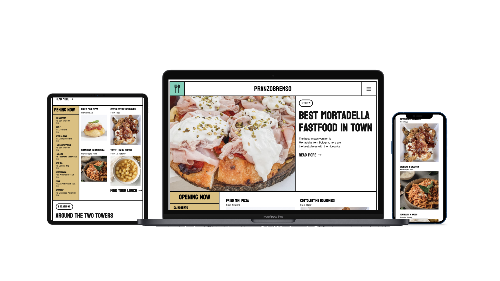

Niche Chathong Candidate No.RR1063
Pranzobrenso is a name that came from two Italian words. 'Pranzo' means lunch, and
'Brenso' is an Emilia-Romagna dialect that means brief and intense. This site will tell
their real story of searching brief and intense lunch in Bologna.
They already have a
successful Instagram account; now, they think it should be nice to document the curated content, offer a mini guide, and receive messages.
Also, to collect fans' emails for further newsletter projects such as local events, and news for
recently opened restaurants.
I choose to work on this project because I live in Bologna, and I want to contribute to this city and its modern culture.
The type of structure I chose to implement is the linear structure, as the aspect of the site is small and straightforward for telling stories. Therefore, there's no need to create a child page for the initial state. However, if the client decides to continue with many cover stories frequently, this part will need child pages and be managed as blog posts.
1. Beautiful sites showcases
I searched for showcases of web design inspirations from digital agencies, designers and developers from these sites:
Siteinspire - https://www.siteinspire.com
Awwwards - https://www.awwwards.com
2. Food culture on social media #foodporn
As the purpose of the website aims to take about desirable food, I look at food photography from social media, blogs, and sites. They inspired me to put the authentic and beautiful picture in the centre of attention. Then make them stand out by minimal design and typography.
3. Accommodation booking sites (for filter function)
Another purpose of this site is to help visitors find their lunch destination. I found that a similar
use case is the filters from hotel booking sites where you can check and uncheck the desirable
characteristic to show the results.
1. Contrast ratio ("color contrast")
Black text in on the white background gives the site the best contrast ratio. Some areas in the
background are brown and blue, which are suitable for some readers that prefer low-illuminance.
2. Headings
Every page has a heading. The best practice is there should be at least one heading on almost all pages. The site's heading hierarchy currently starts with an "h1" as a page title and then smaller down to h5.
3. Image text alternatives ("alt text")
Every image has alt with an appropriate alternative text for screen readers.
1. Content Usability
The site has a good balance between text and visual content.
2. Navigation Usability
Linear navigation has been introduced on the main navigation bar. Including contextual navigation, quick links, and footer navigation. Visitors can quickly go through 5 pages of the site.
3. Visual design usability
The site helps to make the content desirable.
1. The navigation Hamburger menu
I researched the hamburger menu showcase and tried them on different sites. Once I found the menu with function and interaction I felt suitable for the site, I looked at the code and tried to implement it.
2 The responsive map
At first, I follow the course video lesson on Coursera by implementing a PNG image in the
<map> tag. But, turn out the result was not responsive as I expected. So I researched the solution via Google; I found a blog that suggested using an SVG object instead.
3. The checkbox filter
There are plenty of checkbox filter tutorials out there; I tried to look at several code pieces and
tried to implement them into the find your lunch page
Usability. I had a chance to show the website to the Pranzobrenso team and let them test it. They commented that navigating through the site is easy and straightforward. The contents show the purpose of the site
Time management:
I have spent a tremendous amount of time completing this project and outbalanced the project from another module.
As I design the site in Figma, I should take more advantage of Figma to design the interaction,navigation, and inspecting CSS.
To focus on MVP first. I should code the rough version of the website first to deal with the more significant issues.
Pranzobrenso's HTML sitemap:
Pranzobrenso's visual sitemap:

Here are the initial wireframes I designed and shared with the Pransobrenso team to choose from before proceeding with the development. The team likes the first design; however, they think the second design is more exciting and seems unique.
Here are the wireframes demonstrating how the content blocks should behave on a desktop, tablet, and mobile.
Here are the high-fidelity wireframes of the design with placeholder contents.
Here are the Mockups of the website with real contents.
